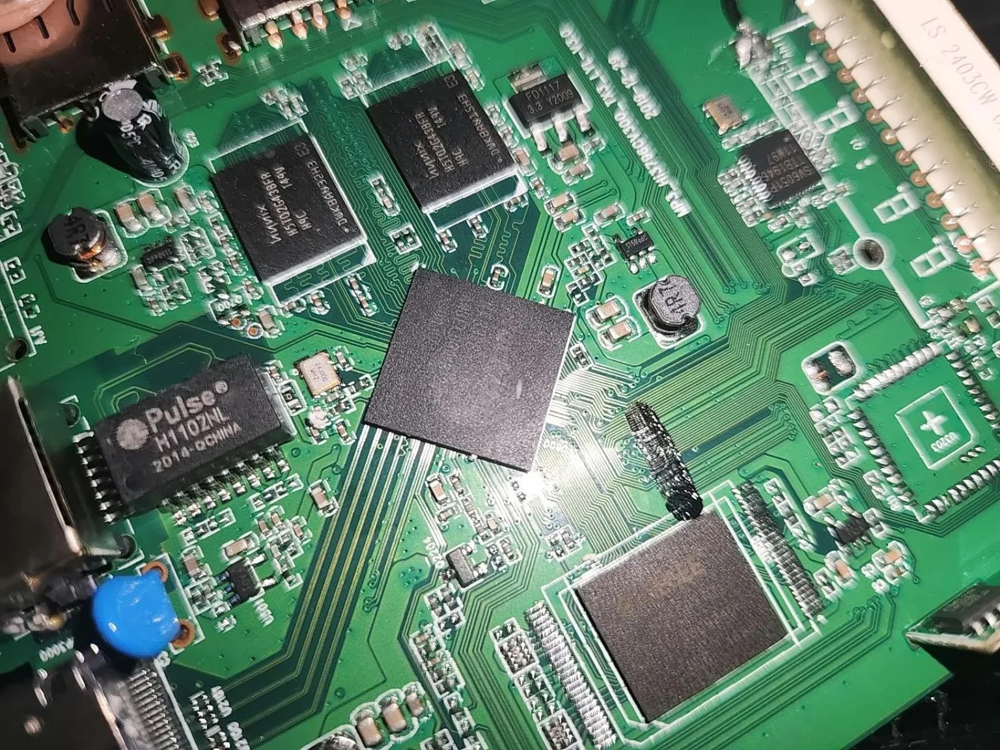
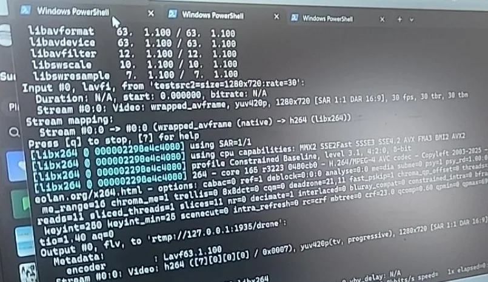

EVIDÊNCIAS / TRABALHO TÉCNICO
Bastidores.
Registros reais de equipamentos ARM, laboratório Linux e testes técnicos. Esta seleção representa diferentes etapas do trabalho, não resultados quantitativos nem autoria individual de todas as atividades.






Fotografias otimizadas para publicação e sem EXIF. As capturas de infraestrutura sensível e as imagens com dados operacionais internos não fazem parte da seleção.